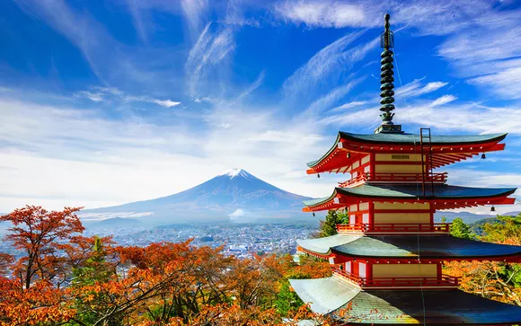

Explorez les Trésors du Japon
Plongez dans l'aventure ultime en explorant les paysages étonnants, les traditions séculaires et la modernité captivante du Japon. De Tokyo aux temples anciens, chaque coin du pays vous réserve une expérience unique.

Que vous soyez attiré par les gratte-ciels étincelants, les jardins paisibles ou les festivals animés, le Japon a quelque chose à offrir à chaque voyageur passionné.